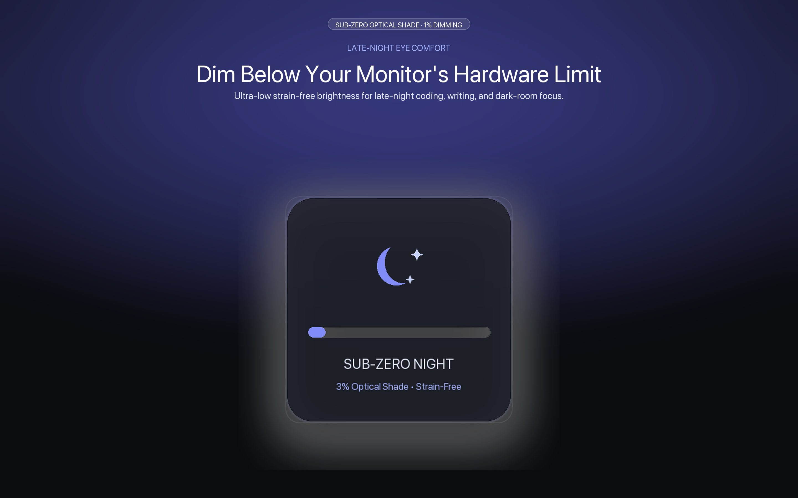

Updated September 4, 2026 · 5 min read
Most commercial desktop monitors from LG, Dell, Samsung, ASUS, and BenQ are designed for brightly lit corporate offices. Their minimum hardware backlight setting typically bottoms out at 30 to 50 nits.
In a dark bedroom or pitch-black home office at 1:00 AM, 30 nits feels like staring directly into a flashlight. This causes severe eye fatigue, headaches, circadian rhythm disruption, and dry eyes.

When you lower a monitor to 0% using its on-screen menu buttons, the physical LED backlight cannot turn off without shutting off the panel entirely. Physical dimming also introduces pulse-width modulation (PWM) flicker on cheaper panels, which triggers micro-spasms in eye muscles.
MonitorGlow's Sub-Zero Night Mode bypasses hardware limits by applying a mathematical color-space transform directly inside the macOS CoreGraphics gamma pipeline.
Experience strain-free coding with MonitorGlow Sub-Zero Night Mode.
Get MonitorGlow Free